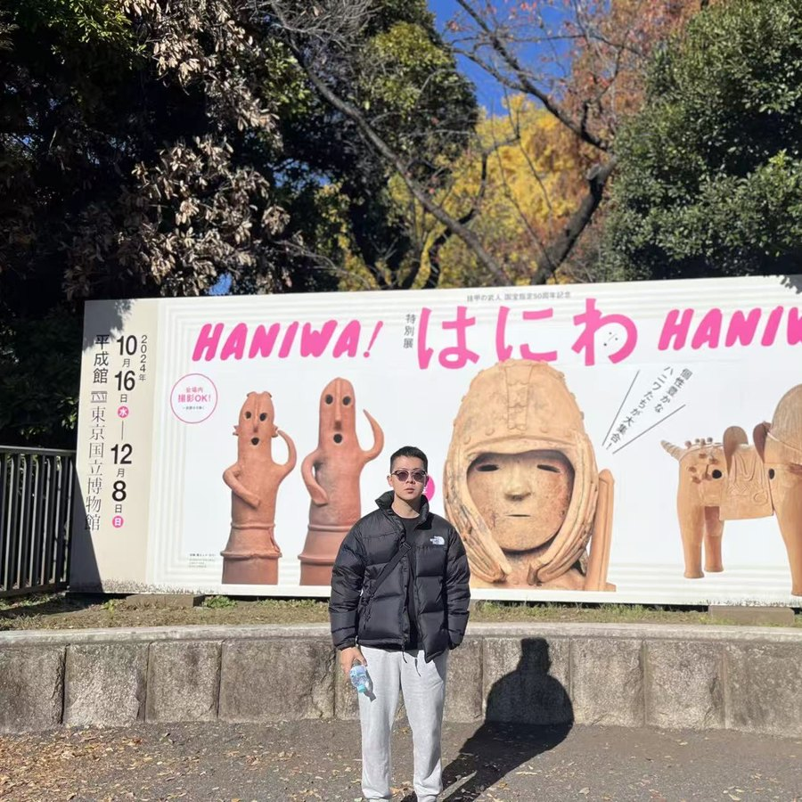
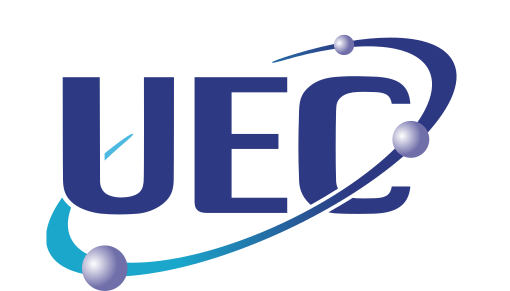

Postdoctoral Researcher · The University of Tokyo
Zhiyang Qi
斉志揚
I am a postdoctoral researcher at The University of Tokyo, working in Toriumi Lab on Informational Wellbeing.
I am also interested in dialogue systems and psychological counseling AI. I am happy to contribute to collaborative projects through online discussions, especially by sharing ideas, feedback, and research perspectives. Please feel free to contact me!

Tokyo, JapanNews
- 2026.09One paper was accepted by the Journal of Natural Language Processing.
- 2026.09One paper was accepted by WI-IAT 2026! See you in Brisbane, Australia!
- 2026.08My solo paper was accepted to EMNLP 2026 Main Conference! See you in Budapest!
- 2026.08My proposal was selected for MEXT's AI for Science Program (SPReAD)! (JPY 3.9M for 5 months; acceptance rate ≈ 3.3%)
- 2026.05One paper was accepted by the International Conference on AI in Healthcare (AIiH 2026).
- 2026.03I received my Ph.D. from

The University of Electro-Communications.
Selected Publications
Work Experience
- 2026.04 – PresentTokyo, JapanProject ResearcherSupervisor: Fujio Toriumi
- 2026.05 – 2026.08Tokyo, JapanResearcherSupervisor: Maki Sakamoto
- 2025.04 – 2026.03Tokyo, JapanResearch AssistantSupervisor: Maki Sakamoto
Education
- 2023.04 – 2026.03Tokyo, JapanPh.D. in InformaticsAdvisor: Michimasa Inaba
- 2021.04 – 2023.03Tokyo, JapanM.S. in InformaticsAdvisor: Michimasa Inaba
- 2015.09 – 2019.06Qingdao, ChinaB.S. in Software EngineeringAdvisor: Zhen Sun
Research Grants
Principal Investigator · 2026.09 – 2027.02
JPY 3,900,000in total
心理カウンセリング過程を捉えるマルチモーダル対話基盤の構築
Awards and Honors
- 2026.03言語処理学会第32回年次大会 (NLP2026) 優秀賞, selected 13/789 papers.
- 2024.09AIWolfDial 2024: Best Win Rate and Game Action Award; Best Subjective Evaluation Award.
- 2024.09第19回YANSシンポジウム ハッカソン, YANS運営委員特別賞.
- 2023.12対話システムライブコンペティション6 シチュエーショントラック, 優秀賞.
Academic Service
ReviewerACL Rolling Review (ARR; Great Reviewer), SIGDIAL, PRICAI, ACM Web Conference (WWW), ICWSM.